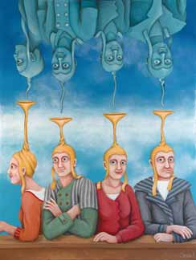
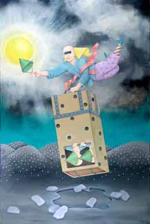

Can life exist in other forms besides the one we live in? Can we access such realms? Can anyone see them?
The art world, especially the surreal, visionary and fantasy genres, suggest a glimpse into the vast range of possibilities that exist beyond normal human perception.
Worlds Far Out
The ongoing desire to discover an alternate fantastic reality, which is perfect and free of the limitations of time-space, begins in many people’s childhood. As children, we were often curious about who we are, and what this life is all about. In many cases, the death of a person we knew raised many questions about the after-life. The gnosis about existence of realms beyond is imprinted in the human collective experience. There is a vague memory in every individual’s mind regarding other dimensions of existence.
Where did we come from and what is the purpose of this life? This question is often asked by humans of all ages. Did we come to this world from another realm? Can life exist in other forms besides the one we live in? Can we access such realms? Can anyone see them? In the second half of the 20th century, modern science developed new tools to explain the existence of life in more than one dimension. According to the “String Theory,” the universe is spread in ten different dimensions consisting of varying energy vibrations and the universal energy field is composed of “membranes” and other esoteric shapes.
The Realm of Matter
All that exists, seen or unseen, is an infinite field of being composed of one dimensional strings that vibrate in an infinite spectrum of frequencies. The infinite energy field contains all that there is, it is the source where all forms of life exist. At the lowest range of this wide ray of frequencies, there is a “thickening” of energy fields. The lowest frequencies which crystallize into matter, are known to us as the “physical” world (dimension), which is measurable and can be recognized by our 5 senses. All other forms of life, which vibrate in higher frequencies that are beyond human perception, create the parallel realities of other realms. Scientists assume that parallel realities were created by the “missing” 80% of the mass released after the “Big Bang.” This mass was transformed into energy fields that compose the other dimensions. Different theories suggest that we exist in the 3rd dimension (out of 10). This is the most condensed energy field which enables the formation of matter. Other dimensions contain different forms of life, with different levels of consciousness in different frequencies. All the physical attributes known to us as our physical world— such as electro-magnetic fields, gravitation, and nuclear energy—are singular manifestations of the universal energy.
The Kabbalistic Outlook
According to the mystical Kabbalah, which investigates universal secrets and the essence of life, we can learn that the reality we are aware of represents a tiny section of the whole. The Kabbalah indicates that the larger part of existence—the dimensions that we cannot perceive with our human limitations—is indeed the reality itself and our physical life is just an illusion. The Kabbalistic “Ten Sefirot”—or Ten Spheres—is a clear manifestation of the ten dimensions of the universe. The nine higher spheres existed before our physical world was formed. The highest sphere is “Keter” (Crown), a dimension of eternal light, the source of everything created, a dimension with no limitations. The following eight spheres are stemmed out of the highest sphere and actualize their previous sphere as their energetic consistency becomes more and more condensed. The energetic volume of every sphere is one tenth of its previous sphere. The world in which we live is the sphere named “Malchut,” (kingdom), the realm of matter.
The Scientific Perspective
The theory of parallel dimensions was first contemplated by scientists at Princeton University. A recent research by Prof. David Dutch of Oxford University has proven the theory of parallel worlds. He claims that we can only see a minimal portion of the large reality. Our world is only one of many possible hidden realities, only one single form of existence out of infinite dimensions that exist at the same time. According to quantum physics, there is more than one universe, and we can interact with alternate dimensions of being.
Parallel realities may exist by different physical laws of time and space. Their transpirings can be manifestations of another set of possibilities that are alternative to the occurrences we witness in our own reality. They may be happening just a few millimeters away from us, but we cannot be aware of them because their energetic frequencies are unperceived by us.
Accessing Alternate Dimensions
The human soul, which is an integral part of the immense universal energy field, has a subconscious connection with different forms of being. As humans, we are “trapped” in a physical body that limits our large vision of the universe. Consciously, we can only be aware of aspects that can be absorbed by our five senses. People who develop their sixth sense can access knowledge which is beyond the physical existence.
According to modern physics, the passage between our dimension and parallel realities is in the form of “black holes” or “worm tunnels” that exist in some mysterious locations in the universe. Mankind has vague memories (or traces of memories) of other existing dimensions, and there is an ongoing quest to overcome the limitations of the mind and access the larger picture.
Humans are able to connect with alternate realities in some conditions
As our souls leave our bodies during sleep, they can access higher realms and get recharged and reset. According to the Kabbalah, the sleep process is considered as some form of death, when the soul departs from the body. Practicing Jews have a special morning prayer to thank God for returning the soul back into the body upon awakening.
In deep trance meditation, people can silence their ever active minds and connect with the eternal universal love energy. Psychics and metaphysical practitioners whose sixth sense is developed can access knowledge through deep trance as well. At death, the spirit leaves the physical body and moves on to a higher level of consciousness, which is limitless. In fact, this is the ultimate transformation into another dimension—a total change of form. For most people, reading fantasy literature or watching science fiction movies may open their imagination to ideas and possibilities which are beyond “normal” existence.
Where Can You See Parallel Worlds?
Art is the answer. Surreal art is characterized by images that come directly from the subconscious mind. As known in metaphysics, the subconscious mind is the medium through which our souls are connected to universal wisdom. Universal wisdom is an infinite pool that contains all information and endless possibilities, as in the Akashic Records.
The art world—especially the surreal, visionary and fantasy genres— suggests a glimpse into the vast range of possibilities that exist beyond normal, human perception. Some surrealist artists are, in fact, clairvoyants who absorb images from alternate forms of reality. According to social perception, they “capture” visuals through channeling.
The Artistic Simulation
Look at Salvador Dali’s paintings “The Dream” and “The Temptation of St. Anthony.” What if his vivid surreal imagination describes an alternate reality where such scenes take place? Rene Magritte’s painting “The Human Condition” is a clear illustration where one plane (the image on the canvas) merges with another (the actual landscape in the back). Magritte’s famous “Chateau des Pyrenees” depicts a huge rock floating over the ocean, with a castle built on top.
Well – everybody knows that a huge boulder cannot float in the air but can this scene possibly be in a dimension that has a different set of physical laws?
Remedios Varo, a Mexican surrealist, is a terrific example of a clairvoyant artist. Her paintings depict a series of fantasy scenes that seem to be taken from alternate worlds. Look at her painting “The Alchemist” and see reality extending from one dimension to another.
Dreams and Alternate Realities
The mystical Kabbala sees the dreaming process as the separation of the soul from the body during sleep. The only thread that keeps the soul linked to the body is the mental aspect of a human.
As the soul is free from physical restrictions during sleep, it can visit realms that are far out of the earthly dimension to which we are bound during the waking hours. Dreams are experiences that the soul collects during its visit in the “worlds beyond”. Since there are endless realms that exist simultaneously with our physical reality, the spirit, which is an energy body, is drawn there. Dreams do open the gate to alternate realities.
In many cases, the conscious mind cannot comprehend these experiences; therefore, it is not able to remember them when waking up. You may see it as if the mind is “speechless” about where the soul has visited in the dream.
I consider myself a member of this group of artists. I am a self-taught visionary artist. My paintings originate from a mysterious, far-out world and reveal colorful esoteric occurrences, in which creatures and objects interact in unpredictable ways. The metaphysical atmosphere in my creations draw the viewer into a journey through alternative realities. As a life-long student of Kabbalah and mysticism, I have always been fascinated with the gateway points—the borders between different dimensions. My artwork reflects a wide range of potentials, as I explore the different aspects of transformation from one form of existence to another.
Here are a few examples that illustrate my inductions:
In my painting “Shedding Heavy Traces”, two figures are carrying a person whose upper body emerges from an open carrier. The person is on his way “out” of this world, on the verge of leaving this realm of existence (death) and progressing into another dimension. His lower body has already disappeared into what can be interpreted as “nothingness.” On his departure he drops away heavy packages that symbolize the material load he had to carry throughout his life in the physical realm. The painting “Four Twin Souls” depicts four figures, that exist in one dimension who are being spiritually fed by their clone entities that live in another dimension.

My painting “Departure” shows a woman carrying a pod, approaching a staircase through which she will embark on her travel into another dimension. The angel at the top of the staircase unveils the passage to her.

“The Elevator” shows two figures carried in a wooden box over a hallucinated plane. Their faces are covered so that they can’t see the journey’s track. A winged figure carries the cargo through air. This is a scene that deals with metaphysical transformation – as the passengers in the box are being moved from one level of consciousness to the other. Traveling through air, diffusing from one plane into another, riding a floating structure, opening a door to the void, climbing a staircase, or dissolving landscapes - there are many possible ways shown by art as a means to pass into alternate dimensions. If you are curious about the worlds beyond, this is the place to see them.
As the human memories of parallel life forms fade when a soul is reincarnated into a new physical body, glimpses of memory may appear in our minds time and again for a fraction of a second. Capture these visions! These moments of enlightenment come to remind us that our earthly life is just one of infinite possibilities in the mighty universe that created us.
Remedios Varo – The Alchemist - fantasyarts.net
Salvador Dali: http://www.cise.ufl.edu/~fishwick/ac/2008/DaliTemptationofStAnthony.jpg
Magritte: oomu.org


{kind=link}
{kind=link}